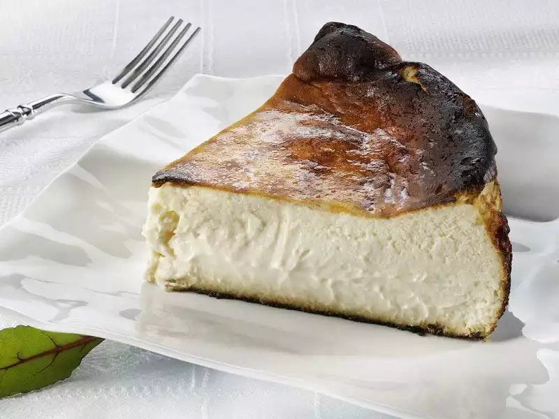
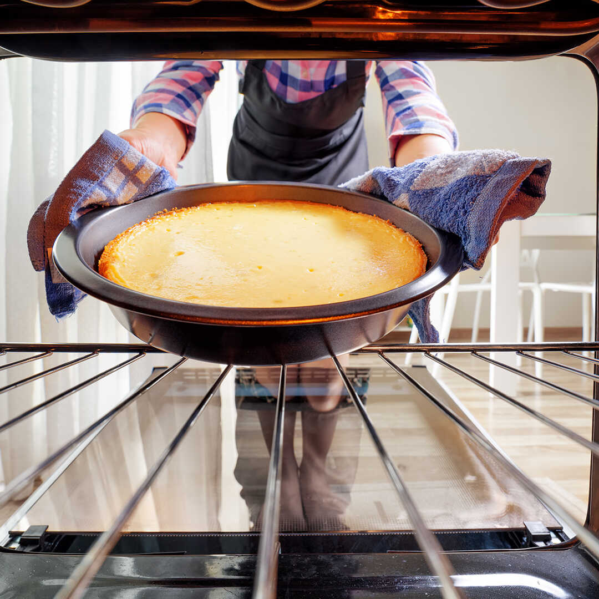

Yapilisi
Seker ve yumurtayi cirpin.
Baska bir kapta; peynir ve kremayi puruz kalmayana dek karistirin.
Her iki karisimi birlestirerek kalan malzemeleri ekleyin ve spatula yardimiyla karistirin.
Onceden yaglanmis cheesecake kalibina, hazirlamis oldugunuz karisimi yavasta aktarin.
Kabi firina verin.

Pisirme
Onceden 250 derecede isitilmis firina karisimi koyduktan sonra, firin derecesini 200 e getirerek calistirin.
ilk 20 dakika 200 derece pisen karisimi, sonraki 10 dakika boyunca 250 derece pisirin.
Pisirme islemi tamamlandiginda, firinin kapagini hafifce aralayarak, cheesecakei yavasca sogumaya birakin.

- 250 derecede firini onceden isitma
- Ilk 20 dakika 200 derecede pisirme
- Son 10 dakika 250 derecede pisirme